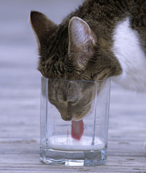

Молочка: про домашнє та не дуже
Природою так задумано, що нагодувати новонародженого маляврика треба найліпшим, найпоживнішим і найбезпечнішим. Всі інші варіанти жорстко відсікалися суворою еволюцією. Тому в молоці у достатній кількості є всі необхідні компоненти: і білОчки, і вуглеводи і жир. Якщо там розмножуються сахаролітичні бактерії, наприклад, лактобацили, то із лактози вони утворюють молочну кислоту. І це є не так зле – якщо молоко було від здорової корови, і ці бактерії встигли перші. Якщо ж за справу беруться мікроби, в яких переважає протеолітичний метаболізм, то окрім цукру, вони ще й ласо їдять білок, та жир. Продукти їх розпаду можуть бути не лише не надто приємними на смак чи запах, а й мати виражену токсичну дію. Ну і, звичайно, такі протеолітики, як ентеротоксична кишкова паличка чи клостридії можуть надовго вкласти споживача на лікарняне ліжко, якщо не в могилу.
Протягом перших 4 годин після видоювання у молоці діють природні антибактеріальні речовини – лізоцим, лактопероксидаза. Потім їх активність зменшується і у залежності від температури та від колекції мікробів, що туди насипалася із корови, рук, посуду, повітря, швидше чи повільніше у молоці починається бурхливий розвиток життя.
Довгий шлях до магазинної полиці
Притомне промислове виробництво молочних продуктів з метою уникнення всіх можливих ризиків суворо вимагає та дотримується виконання ряду умов. Перша з них – вибір адекватних постачальників молока, які не позбавлені здорового глузду і не схильні підсунути свиню у вигляді якого фальсифікату чи залишків антибіотиків. Бо це не лише дороговартісні плями на репутації, а й порушення технологічного процесу та неминучі збитки.
Обов'язковий ветеринарний контроль за здоров'ям тварин, дотримання санітарних норм при видоюванні молока, зберігання та транспортування при температурі 2-6°С підвищують ймовірність скласти ті кілька десятків іспитів вхідного контролю молока на сучасних просунутих виробництвах. Серед параметрів, що контролюються – присутність антибіотиків, рН, загальне мікробне забруднення, вміст лактози, жирних і білкових фракцій що дозволяє зробити висновок про можливість фальсифікованості молока . Якщо те все в межах норми, молоко відкачується, фільтрується, проходить сепарацію (відділяється молочний жир, що йде на виробництво вершків та масла).
Цікавим, важливим та маловідомим етапом є деаерація. При дії низького тиску молоко закипає при низькій температурі і з нього виходить зайве повітря, що важливо для технологічного процесу, оскільки воно перестає пінитися. Також з нього випаровується переважна більшість летких сполук, які зумовлюють запах. Саме тому молоко "з магазину" не має такого характерного запаху, як домашнє. Про те, погано це чи добре – можна сперечатися, бо комусь хочеться "запаху корови", а когось ще з дитинства від такого нудить.
Завдяки процесу нормалізації (додавання потрібної кількості вершків), ми можемо говорити про якусь стандартизацію і мати можливість обрати між 0,5 2,5 чи 3,2 жирності, бо корів, які дають молоко із визначеною потрібною жирністю, поки не існує.
Гомогенізація – наступний крок. Молоко піддається дії вже високого тиску, при якому той жир дробиться на дрібніші крапельки та не спливає, коли постоїть, як це відбувається із домашнім молоком.
Молоко проходить обов'язкову температурну обробку. Її режим визначається цілями виробництва. Далі це може бути або фасовка, якщо продукт власне молоко, або внесення заквашувальних культур, якщо виробляється кисломолочний напій чи сир.
Сировина та продукція проходить багаторазовий мікробний контроль. Це і посів молока на вході, і посів готової продукції, і контроль продукції на кінцевому терміні придатності. Окрім того, на деяких передових виробництвах практикується ренген-контроль, щоб виключити навіть найменшу ймовірність потрапляння сторонніх твердих часток у продукт. Також є така штука, як витримування продукції в так званих стресових умовах, наприклад, при температурі 10, 25 чи 30°С, щоб змоделювати перебіг гарантованого терміну придатності та уникнути всіх ризиків.
Окрім того, звісно, до працівників, які залучені у цей процес, є ряд вимог, починаючи від профільної вищої освіти, закінчуючи санітарною книжкою.
"Беріть-беріть! Свіженьке та домашнє!"
І скотиться сльоза радості, якщо Вам пощастило і це справді так. Бо якщо Ваш продавець живе за три хати, Ви знаєте, що в нього справді є корова, Ви бачите, що він дотримується елементарних правил гігієни, то є хоч якась надія на "свіже" чи "домашнє".
А як показує практика, продавці на базарі далеко не завжди знають, як виглядає та корова. А насправді часто реалізовують фальсифікований товар невідомого походження. Бо, якщо ще можна уявити, що якийсь недобросовісний продавець "свого" може спробувати трохи розвести молоко водою, то щоб фальсифікувати продукт рослинними жирами, простому власнику корови необхідно мати чималі таланти та можливості.
Це часто мають нагоду спостерігати активісти із громадських організацій, що здійснюють рейди по відбору та контролю продукції, у тому числі, і на організованих продовольчих ринках.
Нам пощастило поспілкуватися із головою вГО "Споживча довіра" Оленою Куликовою. За її словами, серед молочних продуктів, які реалізовуються на продовольчих ринках, найчастіше фальсифікують вершкове масло, кисломолочний сир,тверді сири та згущене молоко. Трохи рідше, але також чимало – сметану. І навіть фальсифікат – не завжди найбільше зло, коли мова заходить про мікробіологічні показники.
Перед реалізацією продукції кожен продавець зобов'язаний надати зразки для аналізу працівникам лабораторії ринку, яка підпорядкована Держспоживслужбі. Вони мають перевіряти наявність санітарних книжок, а також підтвердження того, що корівка, з молока якої виготовлена продукція, здорова. Лабораторія ринку проводить експрес-тестування (найчастіше це доволі обмежений перелік показників, зважаючи, що ні часу, ні ресурсів на повноцінний біохімічний та мікробіологічний аналіз просто немає) – рН, редуктазна проба (дуже приблизний метод визначення загального мікробного числа в продукті), радіологічний контроль . Контроль на предмет фальсифікації не проводиться взагалі . Але й тут, як зазначає експертка, з досвіду проведених рейдів видно, що існує деяка ймовірність, що ці дослідження іноді можуть виконуватися лише на папері. Бо проведені аналізи продукції, яка мала схвальні гарні висновки лабораторій ринку, виявляли чимало стафілококів та кишкової палички. На жаль, працівники Держспоживслужби відмовлялися будь-як коментувати ці результати. Справедливо додати, що для дослідження продавець може передати один зразок продукції, а продавати продукцію з іншої партії, тобто виготовлену в інший час. Викликає занепокоєння і недотримання температурного режиму при зберіганні та реалізації молочних продуктів, що особливо актуально влітку. До цього додається відверте нехтування санітарними нормами – продукція зберігається в брудному посуді, на відкритих прилавках, по поверхнях часто повзають комахи, а самі продавці не переймаються навіть миттям рук. Також фіксувалися факти зберігання продукції, яка не була реалізована протягом дня, просто під прилавком – без холодильника, лише прикрита брудним ганчір'ям.
Що вже говорити про стихійні базари та продажі "з машини", продавців яких ми часто бачимо вперше і востаннє? Спека, брудний посуд і руки, пил, який летить і осідає на продуктах, які продаються на асфальті. Кишкова паличка, стафілококи, клебсієли, пліснява, а якщо зовсім не пощастить, то бруцельоз чи навіть туберкульоз – і це далеко не весь перелік!
Окрім частої причини купити те міфічне "домашнє і натуральне", споживачем іноді рухає й банальне співчуття та бажання підтримати нерідко літнього продавця. Але чи справді варто зробити комусь ліпше, щоб собі зробити зле?
